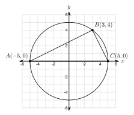
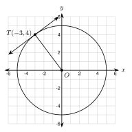

7.4 Inscribed Angles and Tangents
- Find an inscribed angle from its arc, and an arc from its inscribed angle
- Use the fact that an angle inscribed in a semicircle is a right angle
- Use the opposite angles of a quadrilateral inscribed in a circle
- Use a tangent line and the radius to the point of tangency
Warm-Up
1.
2.
3. 16 = 2x, so x =
7.4.1Inscribed Angles
- A central angle has its vertex at the .
- An inscribed angle has its vertex . Its sides are .
- The arc inside the angle is the intercepted arc.
- An inscribed angle is of its intercepted arc. Two inscribed angles on the same arc are .

a. An inscribed angle measures 35°. Find its intercepted arc.
b. An arc measures 130°. Find the inscribed angle.
a. An inscribed angle measures 62°. Find its arc.
b. An arc measures 150°. Find the inscribed angle.
Both angles intercept AB.
m∠ACB = m∠ADB =

a. m∠ABC = (3x + 5)° and mAC = (10x − 30)°
b. Two inscribed angles on the same arc: (2x + 14)° and (5x − 4)°
a. An inscribed angle is (2x + 20)° and its arc is (6x − 20)°. Find x and both measures.
b. Two inscribed angles on the same arc: (3x + 7)° and (5x − 9)°. Find x.
7.4.2Angles in a Semicircle
- A semicircle is an arc of . An inscribed angle on it is .
- If AC is a and B is on the circle, then ∠B is a .


Is B on the circle? Distance from (0, 0):
Slope of BA:
Slope of BC:
Product: , so the sides are .
a. m∠A = 28°. Find m∠C.
b. m∠A = (4x + 2)° and m∠C = (5x + 7)°. Find x and both angles.
a. m∠A = 51°. Find m∠C.
b. m∠A = (x + 12)° and m∠C = (2x + 3)°. Find x and both angles.
7.4.3Inscribed Quadrilaterals
- A polygon is inscribed if all of its vertices are .
- Opposite angles of an inscribed quadrilateral are . They add to .
- m∠A + m∠C = and m∠B + m∠D =

m∠C =
m∠D =
a. m∠A = 71° and m∠D = 108°. Find m∠C and m∠B.
b. m∠B = (4x − 6)° and m∠D = (2x + 24)°. Find x and both angles.
7.4.4Tangent Lines
- A line is tangent to a circle if it touches the circle at exactly point. That point is the point of tangency.
- A tangent is to the radius at the point of tangency.
- Two tangent segments from one outside point are .

Slope of OT:
Slope of the tangent: (opposite reciprocal)
Equation:

The angle at T is a , so use the Pythagorean theorem.

The straight parts are each inches. The curved parts together make one full circle: 2 π(3) = .
Belt =
1. An inscribed angle is of its intercepted arc.
2. An angle in a semicircle measures .
3. Opposite angles of an inscribed quadrilateral are . They add to .
4. A tangent is to the radius. Two tangents from one point are .
Practice
Inscribed Angles
1. An inscribed angle measures 48°. Find its intercepted arc.
2. An arc measures 140°. Find the inscribed angle that intercepts it.
3. An inscribed angle intercepts a major arc of 250°. Find the angle.
4. An inscribed angle measures 90°. Find its intercepted arc. What kind of arc is it?
Solve for x

5. The two inscribed angles intercept the same arc. Find x and each angle.
6. An inscribed angle measures (4x + 6)°. Its intercepted arc measures (10x − 2)°. Find x and both measures.
7. The three arcs between the vertices measure 100°, 130°, and 130°. Find the three angles of the triangle. Check that they add to 180°.
Angles in a Semicircle
8. The circle x2 + y2 = 169 has diameter AC with A(−13, 0) and C(13, 0). Point B(5, 12) is on the circle. Show that 52 + 122 = 169. Then use slopes to show that ∠ABC is a right angle.
9. AC is a diameter. Find x and both angles.
10. AC is a diameter and B is on the circle. m∠A = 47°. Find m∠C.
11. Triangle ABC has all three vertices on a circle. Side AC looks like a diameter, but the center is not marked. Can you say ∠B is a right angle? Explain.
Inscribed Quadrilaterals
12. Inscribed quadrilateral ABCD has m∠A = 88° and m∠B = 104°. Find m∠C and m∠D.
13. m∠A = (6x + 4)° and m∠C = (4x + 16)°. Find x and both angles.
14. m∠B = (2x + 30)° and m∠D = (7x − 12)°. Find x and both angles.
15. A parallelogram has angles of 70° and 110°. Can it be inscribed in a circle? Explain.
Tangent Lines
16. The circle x2 + y2 = 289 has a tangent line at T(8, 15). Show that T is on the circle. Find the slope of the radius and the slope of the tangent.
17. PT is tangent to a circle at T. The radius is 9 and OP = 15. Find PT.
18. PT is tangent to a circle at T. The radius is 7 and PT = 24. Find OP.
19. PT is tangent to a circle at T. PT = 15 and OP = 17. Find the radius.
20. Two tangent segments from one point measure (4x − 7) and (x + 11). Find x and the length.
Real Problems
21. Two pulleys each have a radius of 5 inches. Their centers are 18 inches apart. How long is the belt around them? Round to the nearest hundredth.
22. Two spotlights A and B are on the edge of a round stage. AB measures 110°. A camera stands at seat C on the far side of the edge. Another camera stands at seat D, also on the far side. What angle does each camera see?
23. A road touches a circular track at point T. The track has a radius of 200 meters. A bus stop P is on the road, 150 meters from T. How far is the bus stop from the center of the track? How far is it from the nearest point on the track?
Find the Mistake
24. Amira says: "∠ABC intercepts a 70° arc, so m∠ABC = 70°." Find her mistake. What is the correct measure?
Test Practice
A. 59°
B. 62°
C. 118°
D. 236°
A. 85°
B. 95°
C. 108°
D. 118°